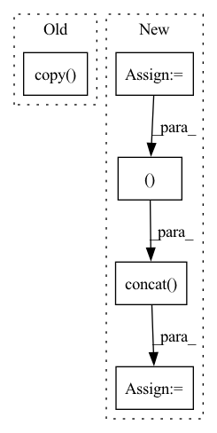

Pattern ID :15249

Before Change
m.add_future_regressor("A")
m.add_lagged_regressor("B")
config_normalization = configure.Normalization("auto", False, True, False)
df_dict = {"df1": df1.copy(), "df2": df2.copy()}
config_normalization.init_data_params(df_dict, m.config_covar, m.regressors_config, m.events_config)
m.config_normalization = config_normalization
df_dict = m._normalize(df_dict)
After Change
df["A"] = np.arange(len(df))
df["B"] = np.arange(len(df)) * 0.1
df1 = df[:50]
df1["ID"] = "df1"
df2 = df[50:]
df2["ID"] = "df2"
m = NeuralProphet(
yearly_seasonality=True,
weekly_seasonality=True,
daily_seasonality=True,
n_lags=3,
n_forecasts=2,
learning_rate=LR,
)
m.add_future_regressor("A")
m.add_lagged_regressor("B")
config_normalization = configure.Normalization("auto", False, True, False)
df_global = pd.concat((df1, df2))
df_global.loc[:, "ds"] = pd.to_datetime(df_global.loc[:, "ds"])
config_normalization.init_data_params(df_global, m.config_covar, m.regressors_config, m.events_config)
m.config_normalization = config_normalization
df_global = m._normalize(df_global)
In pattern: SUPERPATTERN
Frequency: 3
Non-data size: 5
Instances
Fragment ID: 51438417
Project Name: ourownstory/neural_prophet
Commit Name: 7fcf23557cb5b30885a8a07387d411c61a50a05e
Time: 2022-06-21
Author: mgheorghecr@gmail.com
File Name: tests/test_unit.py
M Class Name: AnonimousClass
N Class Name: AnonimousClass
M Method Name: test_loader(0)
N Method Name: test_loader(0)
M Parent Class:
N Parent Class:
M File Name: tests/test_unit.py
N File Name: tests/test_unit.py
M Start Line: 631
M End Line: 644
N Start Line: 684
N End Line: 700
'>
Before Change
// TODO m3.add_country_holidays("US")
config_normalization = configure.Normalization("auto", False, True, False)
for m in [m1, m2, m3]:
df_dict = {"df1": df1.copy(), "df2": df2.copy()}
config_normalization.init_data_params(df_dict, m.config_covar, m.regressors_config, m.events_config)
m.config_normalization = config_normalization
df_dict = m._normalize(df_dict)
After Change
df1 = df[:50]
df1["ID"] = "df1"
df2 = df[50:]
df2["ID"] = "df2"
m1 = NeuralProphet(
yearly_seasonality=True,
weekly_seasonality=True,
daily_seasonality=True,
learning_rate=LR,
)
m2 = NeuralProphet(
n_lags=3,
n_forecasts=2,
learning_rate=LR,
)
m3 = NeuralProphet(learning_rate=LR)
// TODO m3.add_country_holidays("US")
config_normalization = configure.Normalization("auto", False, True, False)
for m in [m1, m2, m3]:
df_global = pd.concat((df1, df2))
df_global.loc[:, "ds"] = pd.to_datetime(df_global.loc[:, "ds"])
config_normalization.init_data_params(df_global, m.config_covar, m.regressors_config, m.events_config)
m.config_normalization = config_normalization
df_global = m._normalize(df_global)
'>
Fragment ID: 51438419
Project Name: ourownstory/neural_prophet
Commit Name: 7fcf23557cb5b30885a8a07387d411c61a50a05e
Time: 2022-06-21
Author: mgheorghecr@gmail.com
File Name: tests/test_unit.py
M Class Name: AnonimousClass
N Class Name: AnonimousClass
M Method Name: test_globaltimedataset(0)
N Method Name: test_globaltimedataset(0)
M Parent Class:
N Parent Class:
M File Name: tests/test_unit.py
N File Name: tests/test_unit.py
M Start Line: 583
M End Line: 626
N Start Line: 631
N End Line: 679
'>
Before Change
df_joint = df_joint[:split_idx].reset_index(drop=True)
threshold_time_stamp = df_joint["ds"].iloc[-1]
for key in df_fold:
df = df_fold[key].copy(deep=True)
df_fold[key] = (
df.copy(deep=True).iloc[: len(df[df["ds"] < threshold_time_stamp]) + 1].reset_index(drop=True)
)
folds = folds[::-1]
After Change
split_idx = len(df_merged) - samples_fold + samples_overlap
df_merged = df_merged[:split_idx].reset_index(drop=True)
threshold_time_stamp = df_merged["ds"].iloc[-1]
df_fold_aux = pd.DataFrame()
for df_name, df_i in df_fold.groupby("ID"):
df_aux = (
df_i.copy(deep=True).iloc[: len(df_i[df_i["ds"] < threshold_time_stamp]) + 1].reset_index(drop=True)
)
df_fold_aux = pd.concat((df_fold_aux, df_aux), ignore_index=True)
df_fold = df_fold_aux.copy(deep=True)
folds = folds[::-1]
return folds
'>
Fragment ID: 51438422
Project Name: ourownstory/neural_prophet
Commit Name: 7fcf23557cb5b30885a8a07387d411c61a50a05e
Time: 2022-06-21
Author: mgheorghecr@gmail.com
File Name: neuralprophet/df_utils.py
M Class Name: AnonimousClass
N Class Name: AnonimousClass
M Method Name: _crossvalidation_with_time_threshold(6)
N Method Name: _crossvalidation_with_time_threshold(6)
M Parent Class:
N Parent Class:
M File Name: neuralprophet/df_utils.py
N File Name: neuralprophet/df_utils.py
M Start Line: 643
M End Line: 664
N Start Line: 634
N End Line: 658